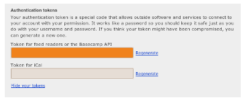

Log into Basecamp and click the "My info" link in the top right of the screen. If you scroll to the bottom of that page you should see a section labled "Authentication tokens." Click the "Show your tokens" link and you'll see something similar to the image below. Chronoly needs your API token (the box is highlighted in orange in the example image).

Copy and paste that entire key into the settings and click "Verify and Save." If you later decide to regenerate your key, you'll need to add your new key to Chronoly before it can work again.
Basecamp urls are in this form:
https://company-name.basecamphq.com
We need you to specify the "company-name" part so that we can point Chronoly at the right account.